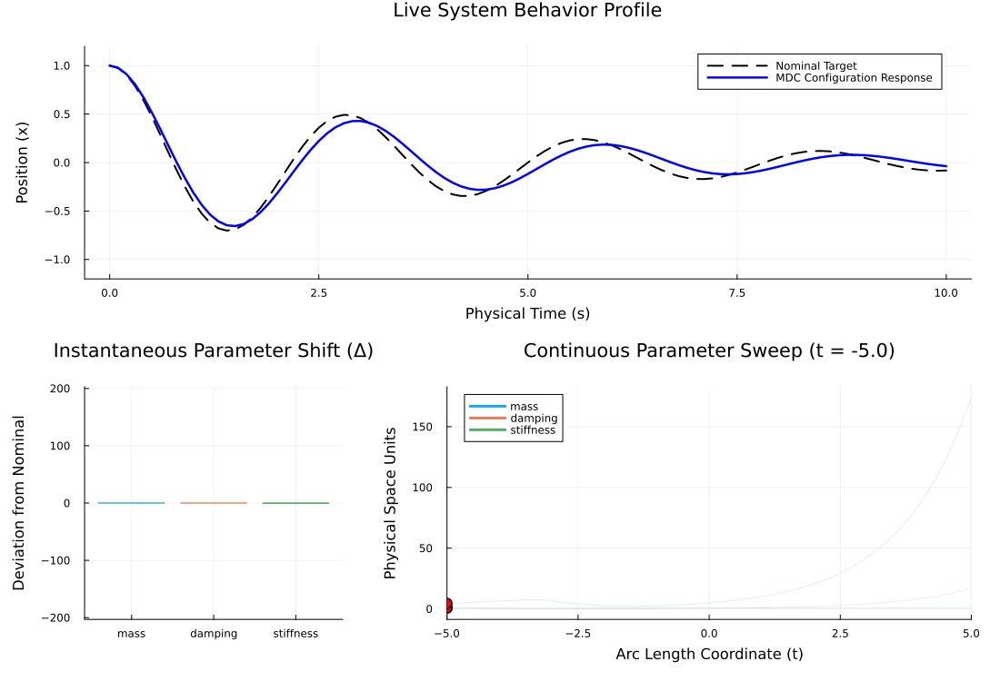

ENV["GKSwstype"] = "100";Mass-Spring System with Transforms
This example builds directly on the basic mass-spring system. Here, we introduce TransformChains to constrain and re-parameterize our search space.
Specifically, we will: Fix the mass parameter m so it cannot change, using FixedParamsTransform. Explore the damping c and stiffness k parameters in log-space using LogAbsTransform, Meaning the MDC will trace through relative changes rather than absolute changes.
#note
#As in the previous example, we use a lucky guess for the initial direction.
using LinearAlgebra, OrdinaryDiffEq, MinimallyDisruptiveCurves, Plots
using ForwardDiffSimulator
Standard 2D mass-spring-damper vector field: $\dot{x} = v$, $\dot{v} = -(c/m)v - (k/m)x$.
function mass_spring_dynamics!(du, u, p, t)
m, c, k = p
position, velocity = u[1], u[2]
du[1] = velocity
du[2] = -(c / m) * velocity - (k / m) * position
return nothing
endmass_spring_dynamics! (generic function with 1 method)Dynamic Cost Function Factory
We reuse the MSE cost function factory. It pre-computes a reference trajectory using θ_nominal and evaluates the MSE deviation for any test parameter vector θ.
function make_mse_cost_function(θ_nominal; u0 = [1.0, 0.0], tspan = (0.0, 10.0), dt = 0.1)
#1. Generate the immutable reference trajectory data
prob_nominal = ODEProblem(mass_spring_dynamics!, u0, tspan, θ_nominal)
sol_nominal = solve(prob_nominal, Tsit5(), saveat = dt)
target_times = sol_nominal.t
target_positions = [sol[1] for sol in sol_nominal.u]
#2. Define the objective function closure (f)
function f(θ)
if any(θ .<= 1.0e-3)
return 100.0 + sum(abs2, min.(zero(eltype(θ)), θ))
end
prob = ODEProblem(mass_spring_dynamics!, u0, tspan, θ)
sol = solve(prob, Tsit5(), saveat = target_times)
current_positions = [s[1] for s in sol.u]
return sum(abs2, current_positions .- target_positions) / length(target_times)
end
#3. Define the exact Automatic Differentiation gradient closure (grad!)
function grad!(g, θ)
ForwardDiff.gradient!(g, f, θ)
return g
end
return CostFunction(f, grad!)
endmake_mse_cost_function (generic function with 1 method)Execution Pipeline
Let's define our base physical system nominal profile.
θ_nominal = [1.0, 0.5, 5.0] #m = 1.0, c = 0.5, k = 5.0
u0_physical = [1.0, 0.0]
tspan_physical = (0.0, 10.0)
core_cost = make_mse_cost_function(θ_nominal, u0 = u0_physical, tspan = tspan_physical)CostFunction{Main.var"#f#6"{Vector{Float64}, Tuple{Float64, Float64}, Vector{Float64}, Vector{Float64}}, Main.var"#grad!#9"{Main.var"#f#6"{Vector{Float64}, Tuple{Float64, Float64}, Vector{Float64}, Vector{Float64}}}, Nothing}(Main.var"#f#6"{Vector{Float64}, Tuple{Float64, Float64}, Vector{Float64}, Vector{Float64}}([1.0, 0.0], (0.0, 10.0), [1.0, 0.9755134583699442, 0.904842726590233, 0.7936721967307147, 0.649376884738368, 0.48058024182482734, 0.2966739509413257, 0.10732886393959679, -0.07799393312870152, -0.2504935966407592 … 0.031625811578573276, 0.00891660527691038, -0.013110762248050708, -0.03342631948156288, -0.05113045390720225, -0.06549090180218642, -0.07596419731606183, -0.08223390080044216, -0.08420817226722992, -0.08199595449006322], [0.0, 0.1, 0.2, 0.3, 0.4, 0.5, 0.6, 0.7, 0.8, 0.9 … 9.1, 9.2, 9.3, 9.4, 9.5, 9.6, 9.7, 9.8, 9.9, 10.0]), Main.var"#grad!#9"{Main.var"#f#6"{Vector{Float64}, Tuple{Float64, Float64}, Vector{Float64}, Vector{Float64}}}(Main.var"#f#6"{Vector{Float64}, Tuple{Float64, Float64}, Vector{Float64}, Vector{Float64}}([1.0, 0.0], (0.0, 10.0), [1.0, 0.9755134583699442, 0.904842726590233, 0.7936721967307147, 0.649376884738368, 0.48058024182482734, 0.2966739509413257, 0.10732886393959679, -0.07799393312870152, -0.2504935966407592 … 0.031625811578573276, 0.00891660527691038, -0.013110762248050708, -0.03342631948156288, -0.05113045390720225, -0.06549090180218642, -0.07596419731606183, -0.08223390080044216, -0.08420817226722992, -0.08199595449006322], [0.0, 0.1, 0.2, 0.3, 0.4, 0.5, 0.6, 0.7, 0.8, 0.9 … 9.1, 9.2, 9.3, 9.4, 9.5, 9.6, 9.7, 9.8, 9.9, 10.0])), nothing)Wiring up the Transform Chain
We want our solver to operate on 2 active parameters: [log(c), log(k)]. The chain applies transforms from left to right in the forward direction.
LogAbsTransform(): maps[log(c), log(k)]to[c, k].FixedParamsTransform([2, 3], [1.0], 3): inflates[c, k]to[1.0, c, k](fixing mass at index 1 to 1.0).
fix_transform = FixedParamsTransform([2, 3], [1.0], 3)
chain = TransformChain(LogAbsTransform(), fix_transform)
transformed_cost = TransformedCost(core_cost, chain)TransformedCost{CostFunction{Main.var"#f#6"{Vector{Float64}, Tuple{Float64, Float64}, Vector{Float64}, Vector{Float64}}, Main.var"#grad!#9"{Main.var"#f#6"{Vector{Float64}, Tuple{Float64, Float64}, Vector{Float64}, Vector{Float64}}}, Nothing}, TransformChain{Tuple{LogAbsTransform, FixedParamsTransform}}}(CostFunction{Main.var"#f#6"{Vector{Float64}, Tuple{Float64, Float64}, Vector{Float64}, Vector{Float64}}, Main.var"#grad!#9"{Main.var"#f#6"{Vector{Float64}, Tuple{Float64, Float64}, Vector{Float64}, Vector{Float64}}}, Nothing}(Main.var"#f#6"{Vector{Float64}, Tuple{Float64, Float64}, Vector{Float64}, Vector{Float64}}([1.0, 0.0], (0.0, 10.0), [1.0, 0.9755134583699442, 0.904842726590233, 0.7936721967307147, 0.649376884738368, 0.48058024182482734, 0.2966739509413257, 0.10732886393959679, -0.07799393312870152, -0.2504935966407592 … 0.031625811578573276, 0.00891660527691038, -0.013110762248050708, -0.03342631948156288, -0.05113045390720225, -0.06549090180218642, -0.07596419731606183, -0.08223390080044216, -0.08420817226722992, -0.08199595449006322], [0.0, 0.1, 0.2, 0.3, 0.4, 0.5, 0.6, 0.7, 0.8, 0.9 … 9.1, 9.2, 9.3, 9.4, 9.5, 9.6, 9.7, 9.8, 9.9, 10.0]), Main.var"#grad!#9"{Main.var"#f#6"{Vector{Float64}, Tuple{Float64, Float64}, Vector{Float64}, Vector{Float64}}}(Main.var"#f#6"{Vector{Float64}, Tuple{Float64, Float64}, Vector{Float64}, Vector{Float64}}([1.0, 0.0], (0.0, 10.0), [1.0, 0.9755134583699442, 0.904842726590233, 0.7936721967307147, 0.649376884738368, 0.48058024182482734, 0.2966739509413257, 0.10732886393959679, -0.07799393312870152, -0.2504935966407592 … 0.031625811578573276, 0.00891660527691038, -0.013110762248050708, -0.03342631948156288, -0.05113045390720225, -0.06549090180218642, -0.07596419731606183, -0.08223390080044216, -0.08420817226722992, -0.08199595449006322], [0.0, 0.1, 0.2, 0.3, 0.4, 0.5, 0.6, 0.7, 0.8, 0.9 … 9.1, 9.2, 9.3, 9.4, 9.5, 9.6, 9.7, 9.8, 9.9, 10.0])), nothing), TransformChain{Tuple{LogAbsTransform, FixedParamsTransform}}((LogAbsTransform(), FixedParamsTransform([2, 3], [1], [1.0], 3))))Instantiating the MDC System
We must map our 3D nominal physical parameters back into our 2D operational space using the inverse chain.
θ₀ = MinimallyDisruptiveCurves.inverse(chain, θ_nominal) #Resolves exactly to 2 elements: [log(0.5), log(5.0)]
dθ₀ = [1.0, 1.0] #2-element initial direction (lucky guess again!)
H = 1.0
sys = MDCProblem(
transformed_cost,
θ₀,
dθ₀,
H;
names = [:mass, :damping, :stiffness]
)MDCProblem with Parameters: 2, Momentum cap (H): 1.0Setup the stability callback and solve
stabilizer = mdc_momentum_readjustment(sys; tol = 1.0e-3)
my_pipeline = CallbackSet(stabilizer)
println("Launching parallel manifold integration...")
mdc_curves = MDCSolve(sys, span = MDCSpan(-5.0, 5.0), callback = my_pipeline; mode = :fast)Minimally Disruptive Curve (MDCSolution)
====================================
• Parameter Dimensions : 2
• Explored Span : [-5.0 ↔ 5.0] (Arc length)
• Initial Cost (C₀) : 0.0
• Total Energy (H) : 1.0
• Max Parameter Shifts :
log(abs(damping)) : [-0.567 ↔ 2.827]
log(abs(stiffness)) : [1.517 ↔ 5.16]
Verification & Analysis
Let's map the terminal operational state back to physical units to inspect the results.
if mdc_curves.positive_sol !== nothing && mdc_curves.negative_sol !== nothing
#Extract the final terminal state coordinates found along the negative integration trace
final_operational_state = mdc_curves.negative_sol.u[end]
θ_operational_end = final_operational_state[1:length(sys.θ₀)]
#Map coordinates back to physical units
θ_physical_end = forward(chain, θ_operational_end)
println("\n--- Subspace Constraint Verification ---")
println("Initial Physical Configuration: ", round.(θ_nominal, digits = 4))
println("Terminal Physical Configuration: ", round.(θ_physical_end, digits = 4))
println("Did Mass stay completely fixed? ", θ_physical_end[1] == θ_nominal[1] ? "YES (1.0)" : "NO")
final_cost = core_cost.f(θ_physical_end)
println("MSE Loss at Path Endpoint: ", round(final_cost, digits = 7))
else
println("Error: MDC integration failed.")
end
--- Subspace Constraint Verification ---
Initial Physical Configuration: [1.0, 0.5, 5.0]
Terminal Physical Configuration: [1.0, 0.567, 4.5574]
Did Mass stay completely fixed? YES (1.0)
MSE Loss at Path Endpoint: 0.0080669Animation Custom Visualization
We can reuse our animation function, which operates entirely in physical parameter space.
function animate_system_response(θ_current)
u0 = [1.0, 0.0]
tspan = (0.0, 10.0)
dt = 0.1
prob_nominal = ODEProblem(mass_spring_dynamics!, u0, tspan, θ_nominal)
sol_nominal = solve(prob_nominal, Tsit5(), saveat = dt)
prob_current = ODEProblem(mass_spring_dynamics!, u0, tspan, θ_current)
sol_current = solve(prob_current, Tsit5(), saveat = dt)
pos_nominal = [u[1] for u in sol_nominal.u]
pos_current = [u[1] for u in sol_current.u]
#Plot the ground-truth nominal response as a static dashed black line
Plots.plot!(
sol_nominal.t, pos_nominal,
subplot = 1,
line = (:black, :dash),
linewidth = 2,
label = "Nominal Target"
)
#Overlay the explored parameter trajectory response in solid blue
return Plots.plot!(
sol_current.t, pos_current,
subplot = 1,
color = :blue,
linewidth = 2.5,
label = "MDC Configuration Response",
xlabel = "Physical Time (s)",
ylabel = "Position (x)",
ylim = (-1.2, 1.2)
)
endanimate_system_response (generic function with 1 method)Animation
We pass raw = true to animate_mdc so it automatically maps the internal coordinates back to physical units before passing them to our painter function.
anim = animate_mdc(mdc_curves, animate_system_response; density = 100, fps = 15, raw = true)Plots.Animation("/tmp/jl_BLSZXv", ["000001.png", "000002.png", "000003.png", "000004.png", "000005.png", "000006.png", "000007.png", "000008.png", "000009.png", "000010.png" … "000091.png", "000092.png", "000093.png", "000094.png", "000095.png", "000096.png", "000097.png", "000098.png", "000099.png", "000100.png"])Save the gif and suppress text output with a semicolon
gif(anim, "mass_spring_transforms_mdc_sweep.gif", fps = 15);[ Info: Saved animation to /home/runner/work/MinimallyDisruptiveCurves.jl/MinimallyDisruptiveCurves.jl/docs/build/examples/mass_spring_transforms_mdc_sweep.gif
This page was generated using Literate.jl.